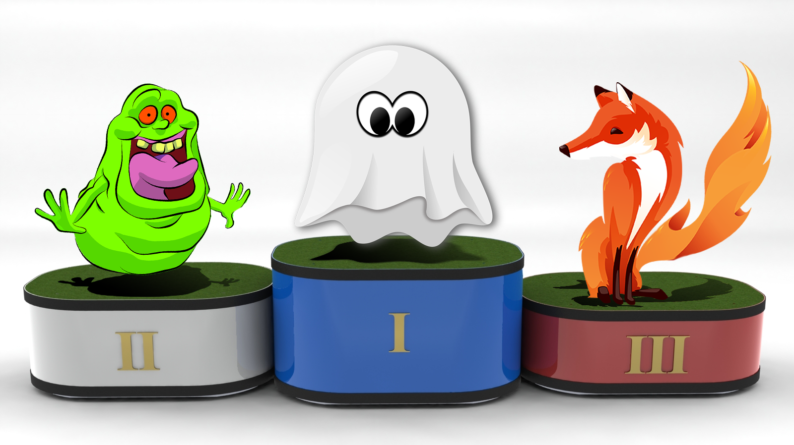

Ралли на браузерах
Собственный проект WB—Tech по комментированию скриншотов coment.me на сегодняшний день, для получения снимка сайта, использует связку selenium + firefox. Данный подход решает задачи получения скриншота, однако тратит достаточно много памяти, и к тому же со временем накапливается большое количество повисших процессов, что в свою очередь приводит к подвисанию сервиса. В связи с этим, необходимо исследовать доступные варианты и определить наилучший из браузеров для автоматического создания скриншотов.
Критерииями для выбора победителя будут являтся:
- Качество скриншотов
- Скорость работы
- Затрачиваемые ресурсы
Участники соревнований
На участие в ралли были отобранны следующие кандидаты:
- Firefox
36.0.1 - Google Chrome
41.0.2272.89 - Chromium
Not tested - Splash
1.5 - Ghost.py
0.1.1 - Zombie.js
0.2.0 - Pantom.js
1.9.8,2.0.0 - Slimer.js
0.9.5,0.10.0pre
Познакомимся с участниками по ближе:
- Firefox — Наиболее массовый не WebKit браузер на сегодняшний день.
- Google Chrome / Chromium — Один из самых быстрых и популярных браузеров.
- Splash — легкий браузер с поддержкой javascript реализовыннй на python-е предоставляюший для управления http api.
- Ghost.py — python браузер с поддержкой javascript ориентированный на автоматическое функциональное тестирование.
- Zombie.js — легкий и быстрый безголовый браузер для автоматического тестирования основаный на node.js
- Phantom.js — быстрый безголовый браузер на движке WebKit со встроенной поддержкой svg. Управляется при помощи javascript api.
- Slimer.js — быстрый браузер, похожий на phantomjs, однако использует движек Gecko от firefox. Управляется при помощи javascript api.
Итак, участники отобраны, и готовы показать себя во всей красе, что ж — приступим к соревнованиям.
Трасса

Для наших, замечательных конкурсантов, предстоит пройти трек по пересеченной местности c четырьмя крутыми поворотами с 16-ю чекпоинтами, а именно: показать свои навыки на следующих ресурсах:
при следующих разрешениях экранов по ширине: 240, 780, 1320, 1920 пикселей.
Заезд первый — «Качество»
Качество — это делать что-либо правильно, даже когда никто не смотрит.
Поскольку, в конечном счете, результат должен быть не хуже, чем имеющийся на настоящий момент — эталоном качества будут выступать снимки firefox-а.
На данном этапе сошли с дистанции сразу 4 участника. Причем, если бы я делал ставки, то проиграл бы, ведь хром, которого я считал фаворитом соревнований, оказался абсолютно некомпетентным участником.
Только видимая область
Для связки selenium-а и google chrome необходимо использовать chromedriver текущая стабильная версия 2.14. И, как оказалось, в нем содержится баг, который тянется с 2013 года, известным issue. Хром драйвер не пролистывает окно браузера при захвате изображения, а делает снимок видимой области.

Так что Google Chrome и Chromium не прошли данный этап.
Неверный resize
Безголовый браузер Splash, запускается демоном и слушает localhost:8050, по которому предоставляет http api управления браузером. Для сохранения скриншота необходимо указать адрес сайта и ширину окна браузера.
request = 'http://localhost:8050/render.png?\
url={url}&width={res}&render_all=1&wait=1'.format(url=url, res=res)
res = subprocess.check_call(['curl', request, '-o', save_as])Однако, как оказалось, ширина окна браузера всегда 1024px, а параметр width влияет только на фактическую ширину полученного изображения, к тому же сжатого как thumbnail.
240px
780px


Так что splash не прошел данный этап.
«Что я вообще сдесь делаю» © Zombie

Как оказалось, зомби вообще не умеет делать скриншоты, поэтому выбывает из соревнований.
Фальшивые паспорта — старый гугл
Некоторые из участников соревнований, а именно Phantom.js и Slimer.js, не смогли бы пройти все этапы ралли, под своими именами, поэтому пришлось выдать им фальшивые паспорта.
Google выдает различные версии сайта, в зависимости от того: какой user agent у браузера запрашивающего страницу, и если этот агент неизвестный или старый, то выдается старая версия гугл, с черной полоской меню.
Phantom.js 240px
Slimer.js 240px


Но при использовании поддельных паспортов, от firefox результат такой как нужно.
'Mozilla/5.0 (X11; Linux x86_64) Gecko/20100101 Firefox/36.0'
Пикселизация — выколи глаза.
Ghost.py не очень хорошо умеет захватывать картинки, логотип google выглядит похожим на забор.

Хоть это и недопустимо, однако, ограничимся предупреждением, и пропустим призрака в следующий тур.
Результаты первого заезда
Во второй тур прошли 4 участника и 4 участника покинули соревнования. Турнирная таблица по окончанию первого этапа.
 Firefox
Firefox- Pantom.js
- Slimer.js
 Ghost.py
Ghost.py Chromium
Chromium- Google Chrome
- Splash
- Zombie.js
Заезд второй — «Скорость»

На данном этапе измерялось время, необходимое для создания браузера, открытия нужной страницы, изменения ширины окна до заданной, сохранения страницы как изображения PNG, закрытия страницы и уничтожения объекта браузера.
Измерения проводились при помощи стандартной библиотеки time, как разница времени между началом запуска функции и её окончания.
import time
# ...
start = time.time()
# call test browser fun()
end = time.time()
# ...
times.append(end - start) < тут интерактивный график вместо скриншота >
< тут интерактивный график вместо скриншота >
Результаты второго заезда
В ходе данного этапа, участники заняли следующие места:
- Phantom.js
2.x - Phantom.js
1.x - Ghost.py
- Phantom.js
1.x+ selenium - Phantom.js
2.x+ selenium - Slimer.js
9.x - Slimer.js
10.x - Firefox + selenium
В результате, ни один из участников не оказался значительно хуже чем firefox, поэтому выбывших нет, все переходят к следующему этапу.
Заезд третий — «Ресурсы»

Учитывалась память, которую тратит главный процесс, и все его дочерние процессы. Память измерялась при помощи функции memory_usage библиотеки memory_profiler с указанием параметра include_children.
Измерялась минимальная, средняя, и максимальная память для каждого скриншота.
from memory_profiler import memory_usage
# ...
memory = memory_usage((fun, args), include_children=True)
# ...
mins.append(min(memory))
maxs.append(max(memory))
avgs.append(avg(memory))Ненасытное привидение
Ghost.py — оказался чрезвычайно прожорливым, занимая всю доступную память, доходил до максимума и вылетал. Единственный из участников, кто не сумел пройти все 16 чекпоинтов за один подход.
Учитывая вынесенное ранее предупреждение, призрак вылетает из конкурса!
I ain't afraid of no ghosts

Двуличный хитрец
Оказалось, что Slimer.js притворяется: запускается дочерний процесс slimerjs,
который потребляет не более 3 Mb памяти, но при этом запускает ещё один
дочерний процесс с именем firefox, который уже добирает память до 300 Mb.
Общие затраты памяти
Поскольку Ghost.py потребляет уж слишком много ресурсов, на графиках не указывается.
 < тут интерактивный график вместо скриншота >
< тут интерактивный график вместо скриншота >
 < тут интерактивный график вместо скриншота >
< тут интерактивный график вместо скриншота >
Результаты третьего заезда
В ходе данного этапа, участники заняли следующие места:
- Phantom.js
1.x - Phantom.js
2.x - Phantom.js
1.x+ selenium - Phantom.js
2.x+ selenium - Slimer.js
9.x - Slimer.js
10.x - Firefox + selenium
- Ghost.py
На этом этапе выбывает Ghost.py, турнирная таблица принимает вид:
- Pantom.js
- Slimer.js
- Firefox
- Ghost.py
Заезд четвертый — «Управляемость»

Несмотря на то, что определилась тройка лидеров и уже можно подвести итоги, рассмотрим как управлять безголовыми браузерами.
Firefox
Firefox работает в связке с selenium-ом и управляется достаточно просто, единственная особенность — это то, что браузер запускает графическую оболочку, поэтому нужно использовать виртуальный дисплей.
from selenium import webdriver
from pyvirtualdisplay import Display
# ...
with Display(visible=0, size=(1024, 768), backend='xvfb'):
browser = Browser(**param)
browser.set_window_size(width, 768)
browser.get(url)
browser.save_screenshot(save_as)
browser.quit()Phantom
Phantom.js можно использовать, как самостоятельный безголовый браузер, так и в связке с selenium-ом. Работа с selenium-ом аналогична firefox, за тем лишь исключением, что нет необходимости запускать виртуальный дисплей.
Собственная работа phantom.js, заключается в вызове консольной команды, и передаче ей скрипта для выполнения браузером.
var page = require('webpage').create();
page.settings.userAgent = 'Mozilla/5.0 (X11; Linux x86_64) Firefox/36.0';
page.viewportSize = { width:1920, height:768 };
page.open('http://wbtech.pro/', function (status) {
page.render('img/phantomjs2-no_selenium/wbtech.pro-1920px.png');
phantom.exit();
});В python запускаем браузер с помощью стандартной библиотеки subprocess.
import subprocess
# ...
subprocess.check_call([phantom_path, script_path, '--ssl-protocol=any'])Slimer
Slimer.js работает точно так же, как и phantom.js без selenium-а, но является не совсем безголовым, он запускает графическую оболочку, поэтому требует виртуальный дисплей.
А так же, в ходе тестирования было выявлено, что для корректного скриншота нужно всегда, перед открытием страницы, указывать базовую ширину окна браузера.
var page = require('webpage').create();
page.viewportSize = { width:1024, height:768 };
page.settings.userAgent = 'Mozilla/5.0 (X11; Linux x86_64) Firefox/36.0';
page.open('http://wbtech.pro/', function (status) {
page.viewportSize = { width:1920, height:768 };
page.render('img/slimerjs10/wbtech.pro-1920px.png');
page.close();
slimer.exit();
});В python запускаем браузер с помощью стандартной библиотеки subprocess.
from pyvirtualdisplay import Display
import subprocess
# ...
with Display(visible=0, size=(1024, 768), backend='xvfb'):
subprocess.check_call([slimer_path, script_path, '--ssl-protocol=any'])Финиш

Гонка завершилась, пришло время подвести итоги и определить победителей.
До финиша доехали всего три команды, так что тройка лидеров очевидна. Учитывая затраты ресурсов и времени, участники занимают следующие места:
- Phantom.js
2.x - Phantom.js
1.x - Phantom.js
1.x+ selenium - Phantom.js
2.x+ selenium - Slimer.js
9.x - Slimer.js
10.x - Firefox + selenium
Безоговорочным лидером гонки стал phantom.js, в качестве награды ему будет предложено занять пост firefox-а, на сервисе coment.me.
